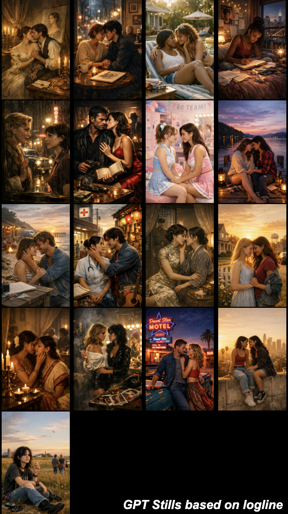
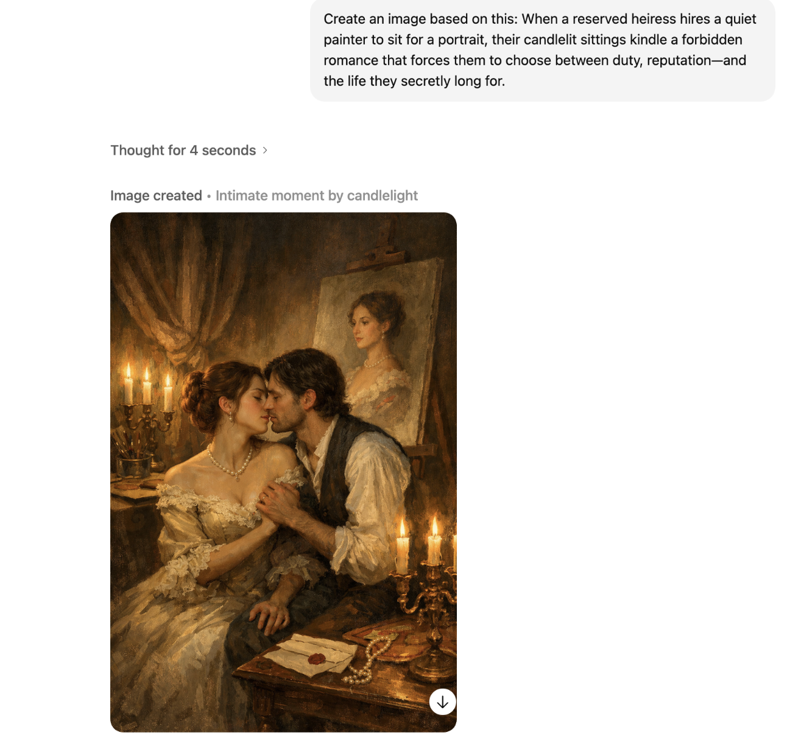
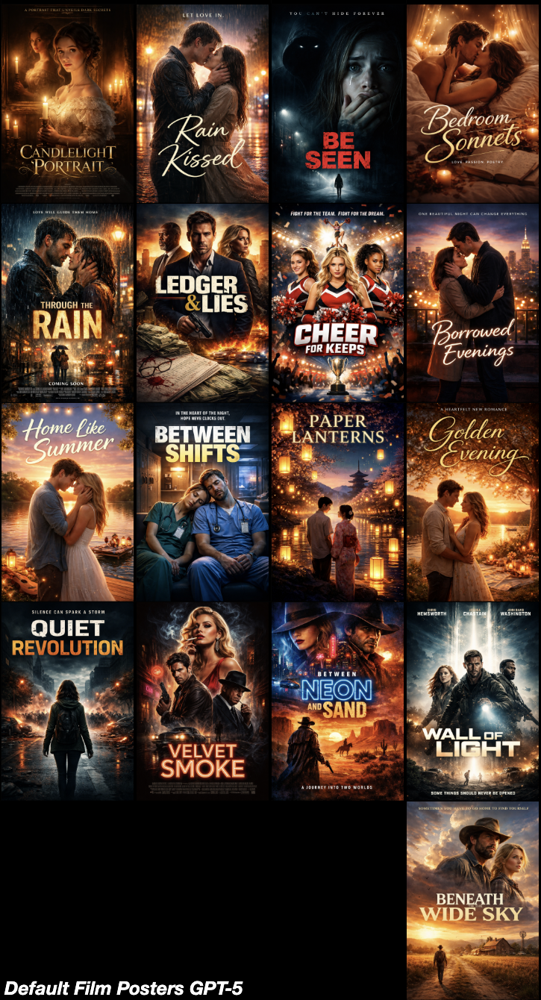
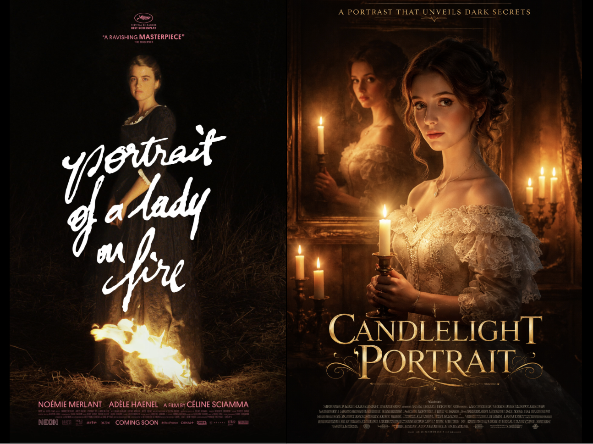
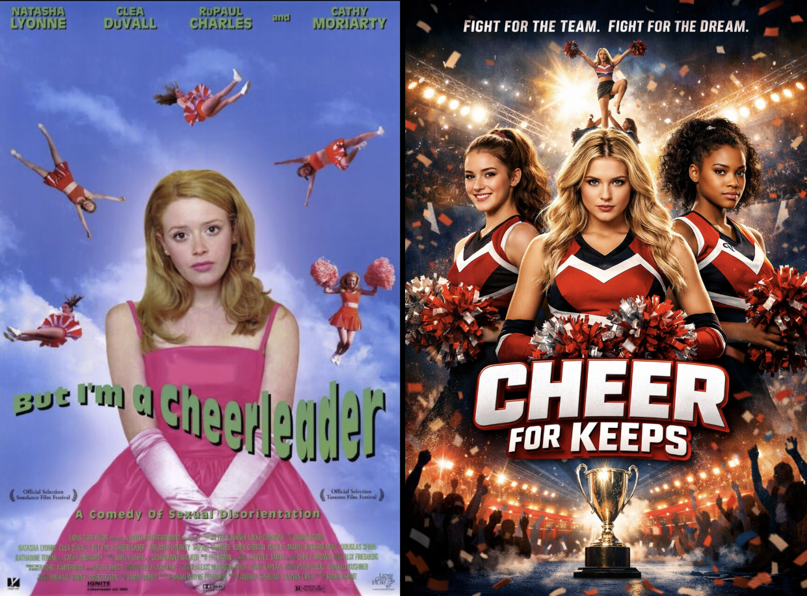

Generated Straight: The Lesbian Omission Tracker
Throughout the experiment, I deliberately maintained the word "Lesbian" as a part of my image and text generation requests. I was interested in probing how the term might function as a label affixed to training data. I was also interested in specifically tracking the re-emergence and context of the term through rounds of prompting that would require the model to retrieve it across shifting modalities.
As I collected more images and text outputs related to the term, however, I did become curious about the durability of Lesbian representation when it is not explicitly requested via language. Having witnessed the disappearance of the term in loglines — the algorithm refused its use and replaced it with more ambiguous language of choice (See: Say It in One Sentence) — I wanted to consider the possibility that this newly introduced ambiguity still contained variety, including Lesbian representation. So I decided to use the loglines as prompts for another round of image generation. In addition, I had observed a reduction in linguistic precision and variety in the newly generated Lesbian film titles I had requested for Lesbian film posters, and I wanted to test these titles' potential as a prompt for a new poster as well.
Two related rounds of engagement with GPT-5 followed. Using the Lesbian film loglines the model had created, I asked for stills based on these loglines and, in another round, for posters for the new titles. But in these rounds, I omitted the word "Lesbian" from my requests. The results, while not surprising, are both noteworthy and dispiriting.
The loglines, which had already replaced specific identity markers with a more ambiguous focus on the dilemma of choice (between being true to oneself and societal demands), now became prompts that an algorithm could conveniently turn into the same dilemma of choice faced by heterosexually identified protagonists. Unless the logline left little room for doubt that this plot centered on two women, men entered the picture.

Of the 17 images, six have turned un-queer and now feature straight couples. The first image, in the upper right, perhaps most surprisingly, originated as inspired by Portrait of a Lady on Fire, the most-mentioned film in the dataset.

If we consider this image in conjunction with the ambiguity around identity present in the corresponding logline, we can see how easily the choice between "duty, reputation —and the life they secretly long for" has now been transposed into a set of circumstances that hint at a struggle around class (heiress and painter) rather than sexuality.
Other loglines, too, that describe their protagonists by profession, elicit responses that result in depictions of heterosexual couples. In a series inspired by Imagine Me & You, the same logline served as the prompt for a Lesbian film poster ("Create a film poster for a Lesbian film with the logline [add logline] Be sure to add a title.") and a still with the word Lesbian omitted. ("Create an image based on this: [add logline]")
We can see that the "graphic designer" and the "free-spirited local" become a straight couple.
In addition to the six straight-presenting couples, we still have two images featuring solitary protagonists (derived from The Miseducation of Cameron Post and Pariah), a rendering that has remained stable across GPT-5 iterations. That leaves nine couples depicted as two women, which aligns with loglines that most explicitly mention two women.
Here is the logline inspired by The Handmaiden: "In 1930s East Asia, a guarded heiress hires a quiet handmaiden — when a secret, forbidden attraction ignites between them, they must decide whether to risk everything for a love that could free them or ruin them both." Both characters mentioned are coded as female in the logline, and, consequently, we receive a depiction of two women that closely adheres to the source of inspiration. (Find the corresponding poster in the third row, third from right in the collection of stills).
Having noticed how ambiguity in loglines opens the door to (hetero)normativity by turning one third of the dataset un-queer, I became curious about charting the im/possibilities within the vagueness of AI-generated titles. The titles the algorithm offered in previous rounds were explicitly related to my request for a poster for a Lesbian film. As observed in the section on posters and title transformations (See: Queer Poster Bot), the algorithm there, too, replaced specific, name-based, mysterious, or stylized titles with generic, weather-related headings, e.g., Through the Rain or Golden Evening. In this final round, I decided to prompt the model with a film poster request based on the title, omitting the word "Lesbian." Here are the 17 posters I received in return.

None of the generated posters hint at queer protagonists, let alone Lesbian ones. Posters evoking a romance feature heteronormative couples. And although I have no intention of reiterating the work that light distribution and light quality do in these renderings, I must say: Notice the responsibility amber and white (warm and cold) light have to transmit the literal and emotional atmosphere of each poster!
More essentialist genre decisions have been made by the algorithm, and in addition to romance, the action film and film noir emerge as having their own distinct aesthetic markers in posters. Most interestingly, a composition of three characters, which was impossible in the Lesbian film posters generated by AI. Ledger & Lies, Velvet Smoke, and Wall of Light all feature three characters, two men and one woman, staging triangles of potential desire, none of them legible as queer.
Horror and thriller tropes govern the posters featuring a lone (recognizable) female character at the center. Three posters fall into this category. Quiet Revolution, Be Seen, and Candlelight Portrait. It's especially interesting to think about how queerness disappears in these images. How do implied genre conventions and particularities of these posters make queer readings unlikely?
When I asked GPT-5 to affix a genre label to Quiet Revolution, it used "Political Thriller," and Be Seen was described as "Psychological thriller — tense, suspense-driven stalker/obsession story with strong mystery and neo-noir atmosphere." When I asked for a bit more information about the protagonist, the model introduced a main character named Maya Reyes, a woman of 27 or 29, respectively. The small figure at the bottom edge of Be Seen seems to replicate the main figure in Quiet Revolution. Other than the woman's age (young!), no specifics about her external markers are given. In Be Seen, we can read her as white, conventionally pretty, and feminine-presenting. The context displayed in Be Seen is especially concerning. Considering this poster alongside its previous iterations, which had maintained the depiction of an interracial relationship, gives this iteration an awful new resonance. Whose neural pathways are these systems modeling? Again, I am reminded of Joy Buolamwini's term "the Coded Gaze," which refers to the presence of biases in algorithms passed on by those who trained and coded them. Taking all these observations about the character and composition together, arriving at a queer reading seems a stretch that snaps believability.
Meanwhile, Candlelight Portrait, which GPT-5 describes as "Gothic period mystery thriller — a moody, atmospheric historical drama steeped in gothic intrigue and psychological suspense (with room for subtle supernatural overtones)" takes the doubling effect of the Lesbian couples in previous iterations to a new level by presenting an odd composition of the protagonist and her portrait. Odd because both seem to glance at a viewer who is positioned as the painter might have been. Perhaps cynically, I immediately clock the image as directed at a male viewer. Part of my viewing is also a downstream effect of my understanding of the inspiring film's poster, Portrait of a Lady on Fire. In the original poster, a woman is visible in the glow of a raging fire that consumes the hem of her dark dress. She looks straight at the viewer, exuding a composed self-knowledge. In the generated version inspired by this film, the fire has been tamed into a display of candles; the impression is not one of independence and desire, but one of… I can't think of how to fill in the blank. The glance is no longer direct but more submissive, the head bowed ever so slightly, a more recognizable pose, a glance that forbids access rather than demands it.

And so, any queer hopes hang on Cheer for Keeps, which promises to launch us into the world of competitive cheerleading with three ambitious women who seem to be aiming for the one golden cup at the bottom center of the image. The camp that defined the poster for But I'm a Cheerleader and invited a queer reading has now given way to a sports drama.

Straining to see that which probably isn't there demands a hunger for representation and the capacity to read between and beneath the pixels that I cannot and do not have to muster as long as I can return to the original films. To most observers, Lesbians have fallen out of all 17 frames.